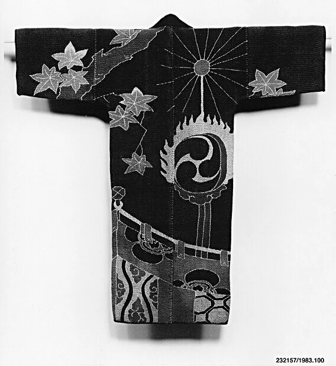

把秋天，穿在背上
枫叶散开，鼓声未响；一件棉衣，把身体留给了风景。

佚名制作者 · 日本 · 十九世纪 · 绗缝染纹平纹棉布
作品档案｜事实与命名边界
馆藏题名为 Fireman’s jacket，本文以“秋景棉衣”作描述性标题。十九世纪，日本，120 × 116.8 厘米，编号 1983.100。图像展示衣物内面翻出后的背面。馆方辨认出枫叶、帷幕和用于宫廷舞乐的太鼓；同时强调：本件虽像江户消防员的衣服，却缺少标识，不能确认这一用途。[1]
构图｜让衣袖成为横向的呼吸
先别急着看纹样，看看轮廓：宽袖横展，衣身垂直下落，形成一架稳固的 T 形。右上方的放射线把目光收向一枚小圆，再引向偏右的大鼓；左侧疏落的枫叶把重量拉回。下方帷幕的弧线横跨衣身，像一个慢下来的收尾。圆、斜线与叶尖不断改变观看方向，而衣服的直边始终替它们守住秩序。
色彩｜先看明度，暂不命名原色
可下载的馆藏图是黑白影像，无法据此确认衣物原来的染色。这里赏析的是图像中的近无彩关系：大片深灰作底，浅灰的叶与线浮起，最亮的细部提供停顿。色彩理论上，张力来自明度差和面积差，而非互补色；中间灰阶又让线条不至于像纯黑白剪纸那样生硬。若转成设计配色，可借用炭黑、雾灰与纸白；这是今天的配色练习，不是对历史颜色的复原。
光影｜图案之外，还有一件衣服
枫叶的浅色主要属于图案本身，不能全部解释为受光。真正提示体积的是衣袖下方与下摆后方的投影，以及布面细纹造成的微小明暗。大面积平展使它近似一张海报，垂落边缘的阴影又把它带回实物。图像像素有限，适合看整体节奏；不能据此诊断针法细节、磨损成因或具体布光。
技法与作者背景｜把表面做成节奏
馆方确认材质为绗缝染纹平纹棉布，没有列出制作者姓名。[1] 染出的图案提供大尺度的叶、鼓与帷幕，绗缝则在更细的尺度上组织表面。这两层节奏相互叠加：远看是清晰的形，近看是织物的密度。作者背景只能落实到十九世纪日本的服饰制作语境；个人生平、作坊以及此件确切染法均未获确认，不能补写。
为何动人｜身体缺席，季节仍在
我最喜欢的是图案没有把衣服填满。叶片之间的暗处，容得下一个转身的想象；鼓的轮廓很有力量，画面却没有真的发出声音。静物照片里，季节与动作都停在将要发生的一刻。我们不必替这件衣服编造主人，也能被这种“有人可能穿过它”的距离打动。这是观看感受，不是历史证言。
借来试试｜深底、浅线、一处偏心
做海报或搭配服装，可试 #242424 炭黑 70%、#A8A8A3 雾灰 20%、#F2F1EC 纸白 10%。这是建议练习色与面积比例，非原作测色。先用深色稳住大面，只在一侧安排一个圆形重点，另一侧留疏落的小形状作平衡。穿搭可用深色宽松上装、同色直筒下装，领口露出一小段浅色；避免让每件单品同时成为焦点。缩小预览时，应先看见轮廓，再看见纹理。